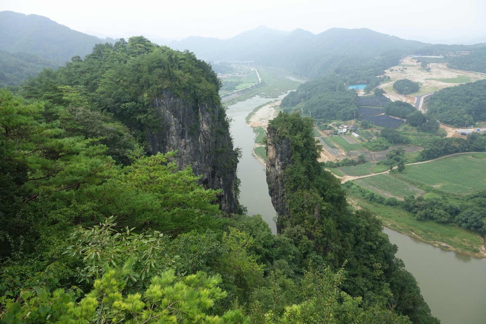
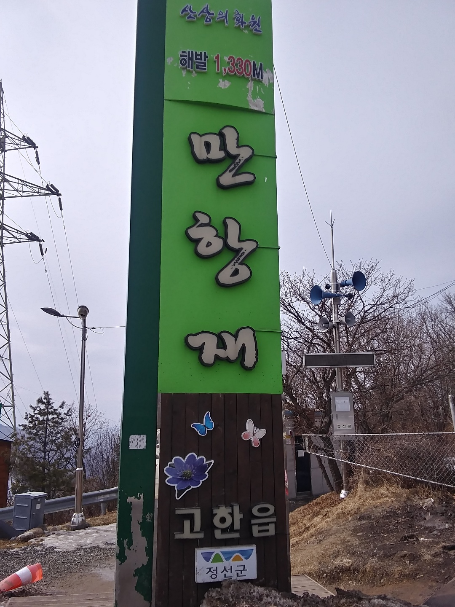
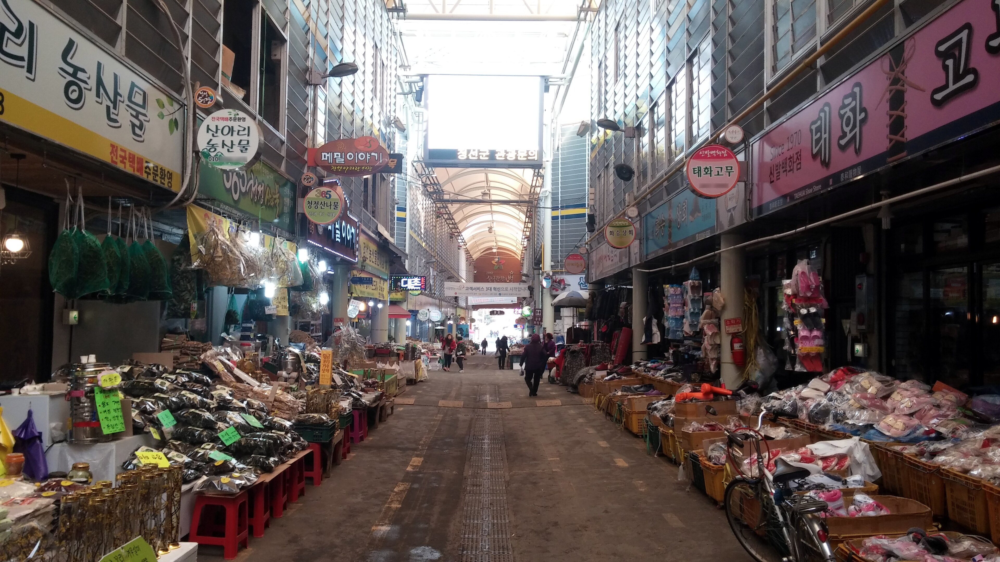
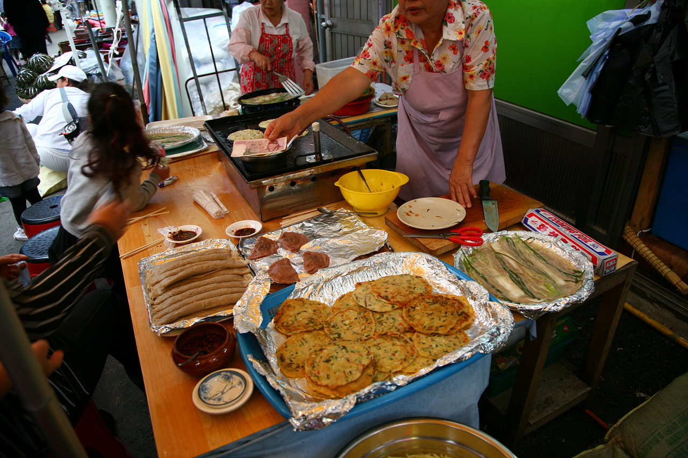
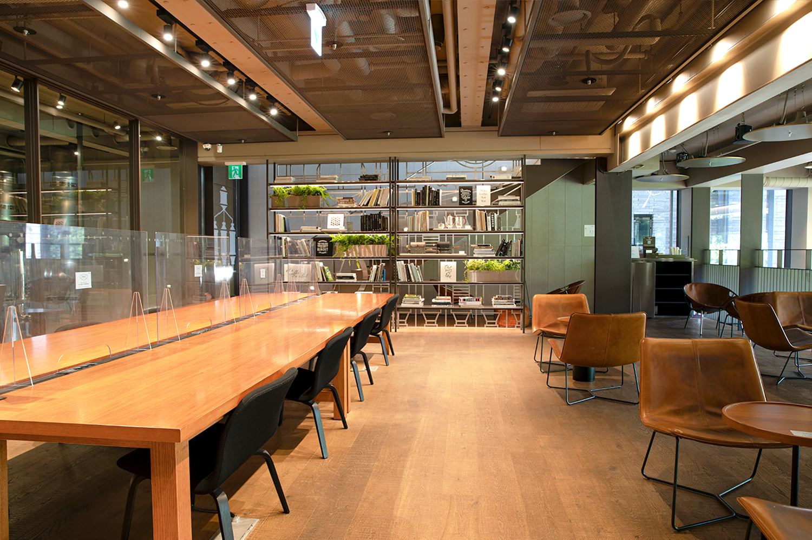
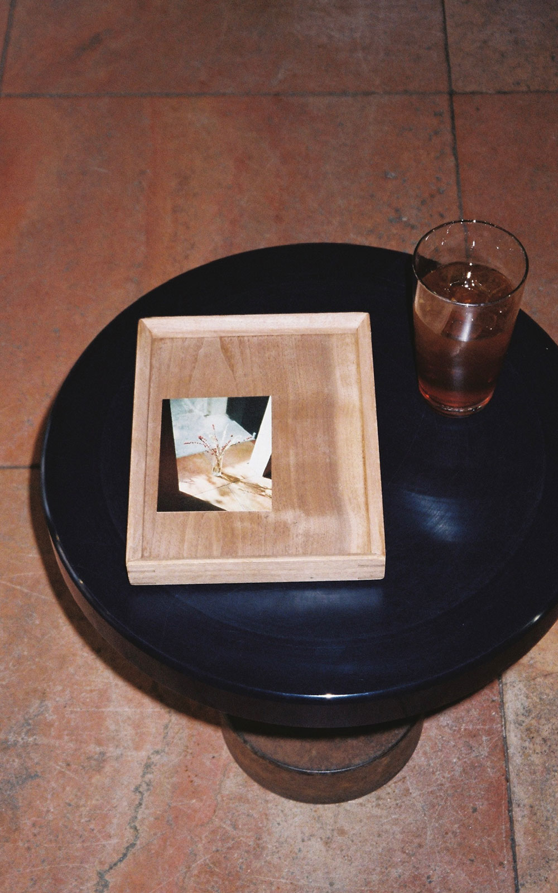
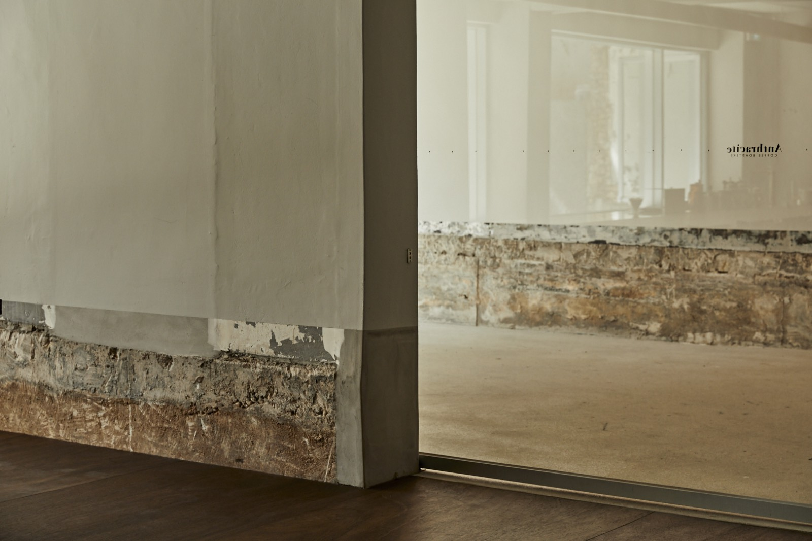

고개를 넘어 영월로
성묘가 목적인 하루에 해발 1330m 고갯길을 얹었습니다. 되돌아 내려오지 않고 그대로 넘어가는 것이 이 코스의 전부입니다.

아침 운동을 마치고 11시에 나섭니다. 오전이 통째로 빠지는 대신 오후를 길게 씁니다. 정선까지 세 시간을 달려 산소에 들르고, 시장에서 점심과 장을 보고, 만항재로 올라갔다가 고개를 넘어 영월로 내려옵니다.
이 하루의 핵심은 되돌아 내려오지 않는다는 데 있습니다. 만항재를 보고 고한 쪽으로 되짚어 정선을 거쳐 영월로 가면 한 시간을 그냥 버립니다. 정상에서 상동 방향으로 그대로 넘으면 영월까지 곧장입니다. 그 한 시간이 선돌에서 해 지는 것을 볼 여유가 되고, 저녁을 서두르지 않아도 되는 시간이 됩니다.
만항재는 오래 머물지 않기로 했습니다. 차에서 내려 산책로를 한 바퀴 도는 정도, 서른다섯 해서 충분합니다. 거기서 아낀 시간은 정선 시장 점심으로 돌렸습니다. 처음 짠 대로라면 시장에 삼십 분밖에 없어 곤드레밥 한 상을 받아 앉기가 어려웠는데, 이제 마흔다섯 분이 생겨 앉아서 드실 수 있습니다.
고개 너머, 선돌
영월에 들어서면 선돌부터 봅니다. 서강 절벽이 두 갈래로 갈라진 사이로 강과 마을이 내려다보이는 자리입니다. 높이 70m 바위로 명승 제76호이고, 주차장에서 데크길을 5분 오르면 전망대에 닿습니다. 주차와 입장 모두 무료이며 별도 운영시간이 없는 야외 개방형입니다.
영월 일몰이 19시 30분 안팎인데, 산지라 해가 능선에 가리는 체감 일몰은 그보다 10분에서 20분 빠릅니다. 18시 15분에 닿으면 한 시간 넘게 여유가 있어 빛이 가장 좋을 때를 골라 보실 수 있습니다.
한여름에도 겉옷
만항재는 해발이 높아 8월 한낮에도 서늘합니다. 얇은 겉옷 한 벌을 차에 두시는 편이 좋습니다. 정상 푯돌을 기준으로 왼쪽이 하늘숲공원, 오른쪽 아래가 천상의 화원입니다. 함백산 정상까지는 걸어서 30분에서 40분이지만 이번에는 넣지 않았습니다.

- 아침기상 후 운동여기까지 마치고 나섭니다
- 11:00한남동 출발무정차 기준 2시간 50분
- 13:50산소시내에서 멀지 않습니다 · 35분
- 14:35정선아리랑시장점심과 장보기 · 45분
- 15:20만항재로 출발약 55km · 1시간 10분
- 16:30만항재산책로 한 바퀴 · 35분
- 17:05고개를 넘어 영월로상동 방향 하산 · 1시간 10분
- 18:15선돌주차장에서 도보 5분 · 25분
- 18:50영월읍 저녁후보는 A–2면 · 85분
- 20:15귀가 출발영월에서 약 2시간 20분
- 22:35한남동 도착야간 산길 구간 포함
남는 시간을 어디에 쓸까
만항재 체류를 70분에서 35분으로 줄이면서 35분이 남았습니다. 쓸 곳은 두 가지이고, 지면에 실은 것은 왼쪽입니다.
15분은 시장 점심에, 20분은 귀갓길에. 앉아서 곤드레밥을 드시고 22시 35분에 들어오십니다.
하루를 제대로 쓰는 쪽입니다.
시장을 30분으로 두고 전부 귀가에 몰아줍니다. 다음 날 일요일이 편해집니다.
대신 점심은 서서 드셔야 합니다. 일요일 오전에 일정이 있으시면 이쪽입니다.
만항재를 접고 화암동굴로
고개는 안개가 끼면 시야가 막히고 산길 운전이 부담스러워집니다. 그때는 정선에 남아 화암동굴로 바꾸시면 됩니다. 내부가 13℃이고 우천과 무관하며, 수요일 휴관이라 토요일은 정상 운영입니다.
다만 일방통행에 계단이 365개라 들어가면 되돌아 나올 수 없습니다.
별마로천문대 · 청령포
별마로천문대는 100% 사전 예약제인 데다 당일 오후 1시면 예매가 닫힙니다. 금요일과 토요일, 일요일에는 천문대길 교행 문제로 개인 차량이 올라갈 수 없어 셔틀에 의존해야 합니다.
청령포는 입장 마감이 오후 5시라 이 동선으로는 닿지 않습니다. 나전역 카페와 병방치 스카이워크는 만항재와 반대 방향이라 뺐습니다.
다슬기는 저녁에 문을 닫습니다
영월 하면 떠오르는 그 집들은 19시면 불이 꺼져 있습니다. 21시 넘어 앉을 수 있는 곳만 골랐습니다.


먼저 걸러낸 것부터 말씀드립니다. 동강다슬기가 19시, 다슬기향촌 성호식당이 19시 30분 마감이고 재료가 떨어지면 그보다 일찍 닫습니다. 다슬기는 다음에 아침 일정으로 잡으시는 편이 맞습니다. 아래는 영월군청이 관리하는 모범음식점 명단에서 토요일 영업과 21시 이후 마감을 모두 만족하는 곳만 추린 것입니다. 상호와 시간, 가격이 군청 고시 자료라 후기 사이트보다 믿을 만합니다. 다만 최종수정이 2025년 12월이라 값은 올랐을 수 있습니다.
| 후보 | 메뉴 | 마감 | 1인 | 왜 이 집인가 |
|---|---|---|---|---|
| 동강수산장어1순위청령포로 103 | 민물장어구이 장어탕 |
22:00 | 37,000 | 운전이 두 시간 넘게 남은 날에 가장 안전합니다. 마감이 가장 늦어 시간이 밀려도 흔들리지 않고, 하루 종일 움직인 뒤 몸에 남는 것이 다릅니다 |
| 월드송어횟집단종로 161-14 | 송어회 회덮밥 |
21:00 | 35,000 | 영월이 송어 양식 산지라 지역색은 이쪽이 가장 셉니다. 연중무휴. 다만 회를 앞에 두고 반주를 못 하는 아쉬움이 남습니다 |
| 영월동강한우하송안길 65 | 등심 · 살치살 육회 |
21:30 | 38,000~ | 정육식당이라 고기를 눈으로 고릅니다. 연중무휴에 주차가 넓어 실패 확률이 가장 낮은 무난한 답입니다 |
| 광천숯불구이하송로 138 | 소갈비살 삼겹살 |
22:00 | 12,000~ | 17시부터만 여는 저녁 전용집입니다. 연중무휴에 값이 절반이라 가볍게 마무리하고 싶은 날에 맞습니다 |
| 장가네 흑염소요리골목길 12 | 숯불구이 전골 · 수육 |
22:00 | 40,000 | 취향이 갈리는 자리입니다. 좋아하시면 이 동네에서 이만한 곳이 없고, 아니면 아예 안 맞습니다 |
둘이 먼저 떨어집니다
월드송어횟집과 영월동강한우가 먼저 닫힙니다. 그때는 22시까지 여는 동강수산장어와 광천숯불구이, 장가네 셋만 남습니다.
산에서 내려오시며 한 통 걸어 두시면 확실합니다. 동강수산장어 033-374-8300, 광천숯불구이 033-373-1019.
곤드레는 점심에 드시니까
시장에서 곤드레를 드시는 것을 전제로 곤드레와 산나물 정식집은 모두 뺐습니다. 솔잎가든과 박가네가 여기 해당합니다.
물레방아쉼터의 쏘가리매운탕은 20시 마감에 소자가 7만 원이라 둘이 앉기에 무겁고, 포레스트의 스테이크는 이 하루의 결과 어울리지 않아 뺐습니다.
노트북이면 맥심플랜트 지하 1층입니다
세 곳을 다 찾아봤습니다. 트래버틴은 자택 1층이라 가깝지만 오래 앉는 자리가 아니고, 노트북을 펴실 거면 맥심플랜트 B1F가 답입니다.



| 카페 | 일요일 | 앉는 자리 | 체류 | 이런 날에 |
|---|---|---|---|---|
| 맥심플랜트노트북 1순위이태원로 250 | 09:00 ~21:00 |
B1F 긴 테이블 · 라운지 체어 1F 메인 바 · 2F 테라스 · 3F 브루잉 라운지 |
길게 | 노트북을 펴고 오래 앉을 날. 연중무휴에 층이 다섯이라 자리가 없을 일이 거의 없습니다 |
| 트래버틴 한남자택 1층 | 미확인 | 낮은 원형 테이블 위주 | 짧게 | 내려가서 커피만 한 잔 하고 올라올 날. 가장 가깝다는 것이 유일하고 확실한 장점입니다 |
| 앤트러사이트 한남 | 미확인 | 노출 콘크리트 · 하드한 면 | 보통 | 일 안 하고 기분만 바꿀 날. 소리가 울려 통화나 집중에는 맞지 않습니다 |
층마다 성격이 다릅니다
B1F 라이브러리 — 긴 테이블, 로스팅룸 전경과 테라스 가든. 집중용입니다.
1F 카페 — U자 메인 바, 13:00 열어 20:30 라스트오더.
2F 테라스 — 앞뒤가 열립니다.
3F 브루잉 라운지 — 한남동 전경.
매장 문의 070-4287-8557. 평일 8시, 주말과 공휴일 9시에 열고 21시에 닫습니다.
1층부터 보시고 아니면 옮기십시오
트래버틴이 자택 1층이니 아침에 잠깐 내려가 보시는 건 공짜입니다. 자리가 좋으면 거기서 커피 한 잔, 노트북을 펴야겠다 싶으면 맥심플랜트로 옮기시면 됩니다.
한남동은 일요일 낮이 가장 붐빕니다. 오픈 직후부터 11시 전후가 가장 조용하고 점심이 지나면 자리 잡기가 어려워집니다.
다만 토요일 귀가가 22시 35분입니다. 10시를 못 지키셔도 무리하지 마시고, 늦게 나가는 날이면 맥심플랜트로 바로 가시는 편이 낫습니다.
- D–6정선 오일장 — 8월 12일 수요일다음 장날입니다. 주말장보다 규모가 큽니다
- D–16정선 오일장 + 주말장 — 8월 22일 토요일둘이 겹치는 날이라 8월에서 가장 붐빕니다
- D–20서울 뮤지엄 나이트 신청 마감 — 8월 26일행사는 8월 28일 서울시립미술관 서소문본관. 야간 관람입니다
- D–24보테로 전시 종료 — 8월 30일예술의전당 한가람디자인미술관. 월요일 휴관, 화~일 10:00~19:00
- D–55고야 전시 종료 — 9월 30일예술의전당
- D–80유영국 회고전 종료 — 10월 25일서울시립미술관 서소문본관. 무료이고 월요일 휴관입니다
- —서도호 개인전 — 국립현대미술관 서울8월 개막해 2027년 2월까지. 기간이 길어 서두를 일은 없습니다
아래는 2차 출처로만 확인했거나 아예 확인하지 못한 항목입니다. 요금과 운영시간은 며칠 만에 바뀌니 그대로 믿지 마시고, 칠해진 둘은 출발 전에 한 번 보시는 게 좋겠습니다.
- 만항재 → 상동 하산로414번 지방도 통행 여부. 넘어가는 길이 막히면 고한으로 되돌아 한 시간을 버립니다. 이 코스의 유일한 단일 실패점입니다
- 영월 저녁 후보 5곳토요일 마감 시간과 재료 소진. 군청 자료가 2025년 12월 기준입니다. 산에서 내려오며 한 통이면 끝납니다
- 함백산 야생화축제8월 8일 행사 여부와 차량 통제. 보통 7월 말에서 8월 중순이고, 겹치면 만항재 주차가 밀립니다
- 정선아리랑시장8월 8일 주말장 좌판 시간. 상인회 공지 미확인. 14시 35분이면 대체로 안전합니다
- 영월 선돌주차장 야간 폐쇄 여부. 지질공원 관리사무국 033-560-2379
- 트래버틴 한남일요일 영업시간과 노트북 정책. 1층이라 직접 확인이 가장 빠릅니다
- 화암동굴요금과 운영시간, 모노레일. 시설관리공단 공지 미확인. 우천 대안입니다